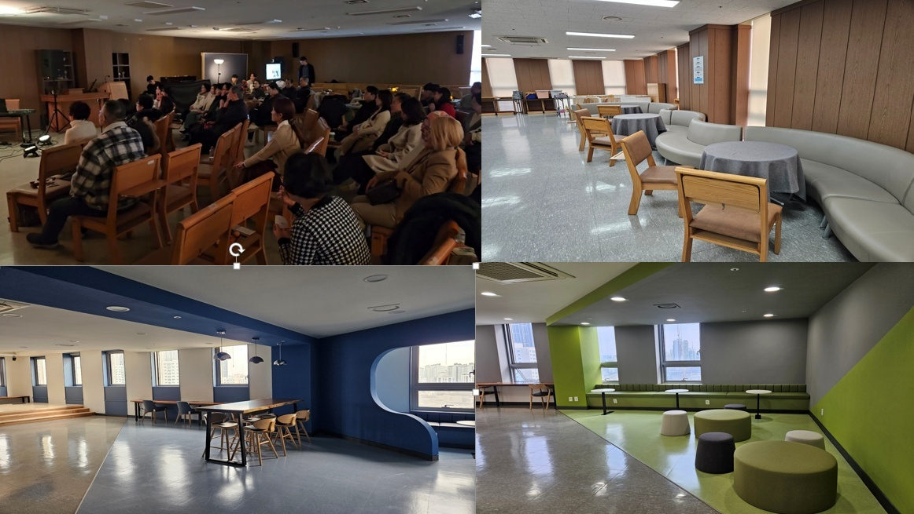
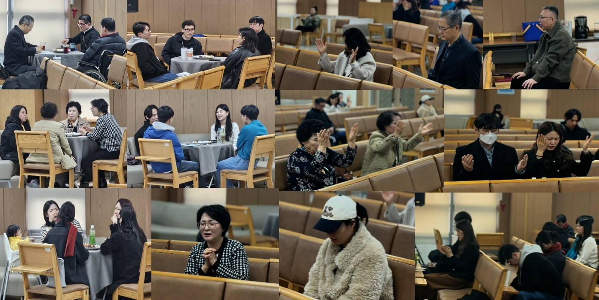
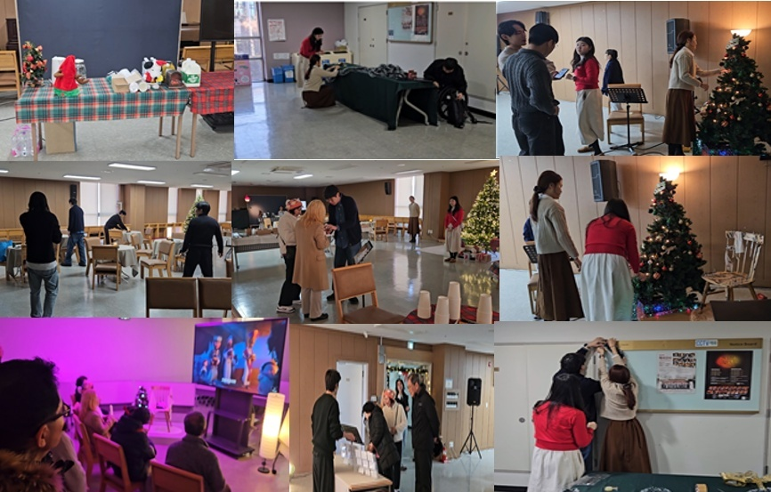
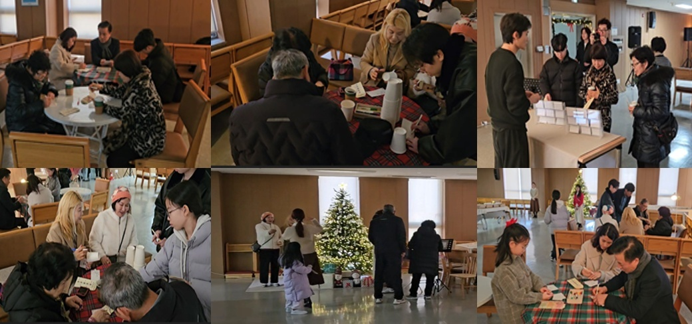
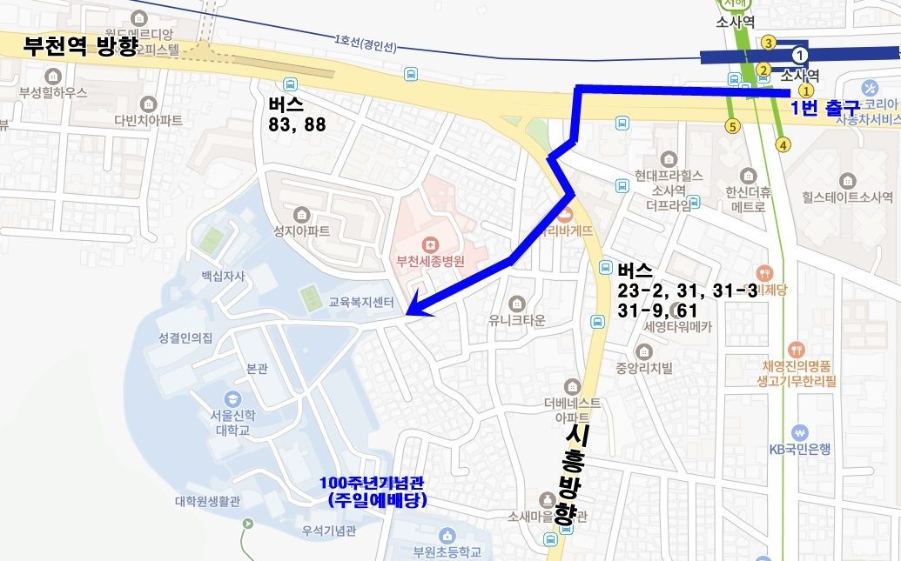

교회 소개 영상
더 행복해지는교회로 당신을 초대합니다

성결교단 탄생 스토리
기독교대한성결교회의 역사를 소개합니다

영혼의 쉼표가 되고, 새로운 힘을 얻는 복된 통로
더 행복해지는교회로 당신을 초대합니다
기독교대한성결교회의 역사를 소개합니다
우리는 성령님이 세상과 교회를 주관하심을 믿고, 성령님의 감동을 가장 소중히 여깁니다.
우리는 청중을 하나님께로 이끄는 예배를 소중히 여깁니다.
우리는 교인들을 영적인 가족으로 만들어주는 패밀리(소그룹)를 소중히 여깁니다.
우리는 교인들의 신앙을 효과적으로 성숙시켜주는 양육과 제자훈련을 소중히 여깁니다.
우리는 뛰어난 한 사람의 능력보다 아름답게 동역하는 것을 더 소중히 여깁니다.
우리는 하나님의 이미지를 훼손하지 않으면서 실천하는 전도를 소중히 여깁니다.
저는 1999년에 “네가 개척하라”(수17:18)는 하나님의 말씀을 받고, 일산에 개척하려고 했는데, 그때 주님이 “너는 돈 없이 교회를 개척시키겠다”고 말씀하셨고, 3일 후에 서울신대 앞에서 장소를 무료로 사용하면서 개척하게 되었습니다. 2000년 1월에 서울신대 안에서 주일예배를 드리며 수많은 사람들을 전도하는 비전을 받았고, 24년의 기다림 끝에 2024년부터 백주년기념관에서 예배를 드리고 있습니다.
오직 하나님의 말씀만을 기준으로 삼고, 성령님이 주시는 감동대로 설교하며 예수님의 모습처럼 겸손하게 목회하려 합니다. 한 분 한 분이 알곡 성도로 성숙되고 행복해지는 신앙생활을 돕는 것이 저의 목회 방향입니다.
"그분은 손에 키를 들고 타작 마당을 깨끗이 하여 알곡은 곳간에 두시고, 쭉정이는 꺼지지 않는 불에 태우실 것이다."
- 마태복음 3:12 -




